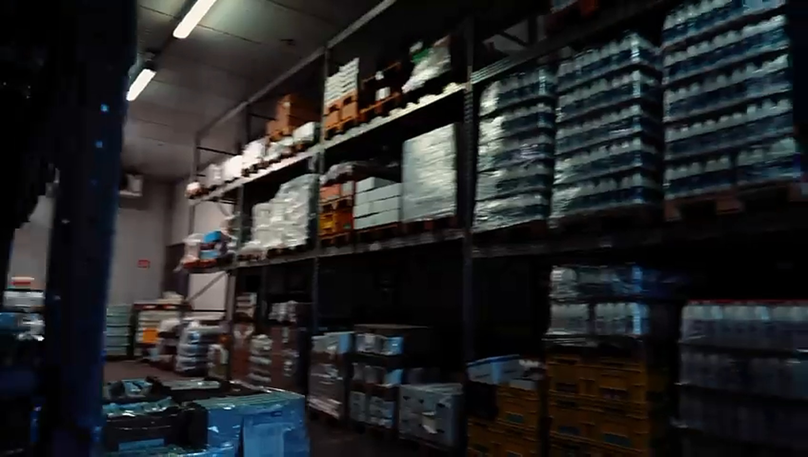
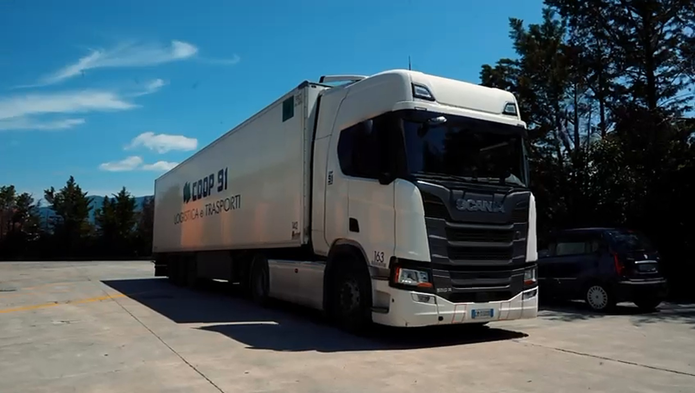
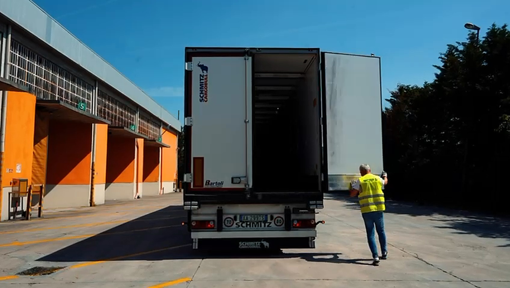

Qui sotto ci sono sei effetti per le linee e i quadratini della griglia del sito, già nei colori di Coop91. Per ognuno trovi cosa vedi, come provarlo e dove lo useremmo. Guardali tutti e rispondi con le lettere che vuoi tenere, per esempio «A, D, F».
Gli effetti che reagiscono al mouse, su telefono, si muovono da soli.

Spazi logistici nei due hub di Venturina Terme e Firenze.

Trasporto refrigerato, servizi dedicati e linee nazionali.

Distribuzione regionale con attenzione alla gestione operativa delle consegne.
Consigliati: A, D, E e F su tutto il sito, più B oppure C solo in alto e in fondo. Rispondi con le lettere che vuoi tenere.